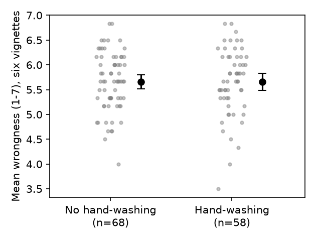

Question. After everyone watches the same disgust-inducing film clip, do participants asked to wash their hands rate six morally questionable acts as less wrong (lower mean wrongness, 1–7) than participants not asked to wash?
Data. Replication data, d12.sav (second study; 132 participants, individual lab sessions, random assignment). Group: Condition (0 = no hand-washing, 1 = hand-washing, per the card's codebook; the file carries no value labels). DV: mean_vignettes, the mean of the six wrongness items (Dog, Trolley, Wallet, Plane, Resume, Kitten); I verified it equals the recomputed item mean for every row.
Exclusions (pre-registered, fixed before analysis). "All of my answers are made up" = yes (Madeup_dummy = 1, n = 4) or experimenter error (Exp_Error = 1, n = 3); one participant had both, so 6 were excluded (1 control, 5 hand-washing). Suspicion ratings were not used in the key test. N after exclusions = 126 (68 no-wash, 58 wash).
Primary test (named in the log before the data were opened). One-way between-subjects ANOVA of mean_vignettes by Condition (equivalent to a Student t-test, equal variances), two-sided; effect size Cohen's d with pooled SD, hand-washing minus no hand-washing, 95% CI from the noncentral t. The claim was to count as holding if d < 0 and p < .05.
| Group | n | Mean | SD |
|---|---|---|---|
| No hand-washing | 68 | 5.654 | 0.593 |
| Hand-washing | 58 | 5.658 | 0.680 |
F(1, 124) = 0.001, p = .97 (t(124) = 0.03). Difference (wash − no wash) = +0.004 scale points. Cohen's d = 0.01, 95% CI [−0.35, 0.36]. The point estimate is zero and in the wrong direction by a hair; the interval rules out an effect larger than about d = −0.35 in the predicted direction.

Robustness (not the basis of the conclusion). Welch t = 0.03, p = .97; Mann–Whitney p = .77; one-sided t (wash < no wash) p = .51. With no exclusions (N = 132): d = −0.05 [−0.39, 0.30], p = .80. Also dropping anyone with any suspicion rating (Final_Rating = 0 only, N = 84): d = −0.08 [−0.51, 0.35], p = .72. No single vignette differed between groups (all |t(124)| ≤ 1.10, all p ≥ .27; three differences positive, three negative). Variances were similar (Levene p = .51). Self-rated disgust after the clip did not differ by condition (18.7 vs 18.5 on the file's summed scale), as expected since it was a common clip.
Limits. The test assumes the codebook's 0/1 coding of Condition; the result is a null either way, so a reversed coding would not change the conclusion. N = 126 exceeds the planned 104, but the CI still allows small effects (|d| < 0.35) in either direction.
The claim does not hold on this data: hand-washing after the disgust clip did not lower moral wrongness ratings (F(1, 124) = 0.001, p = .97, d = 0.01, 95% CI [−0.35, 0.36]).
Files: analysis.py (produces every number here), analysis.out, fig1.png, log.md.